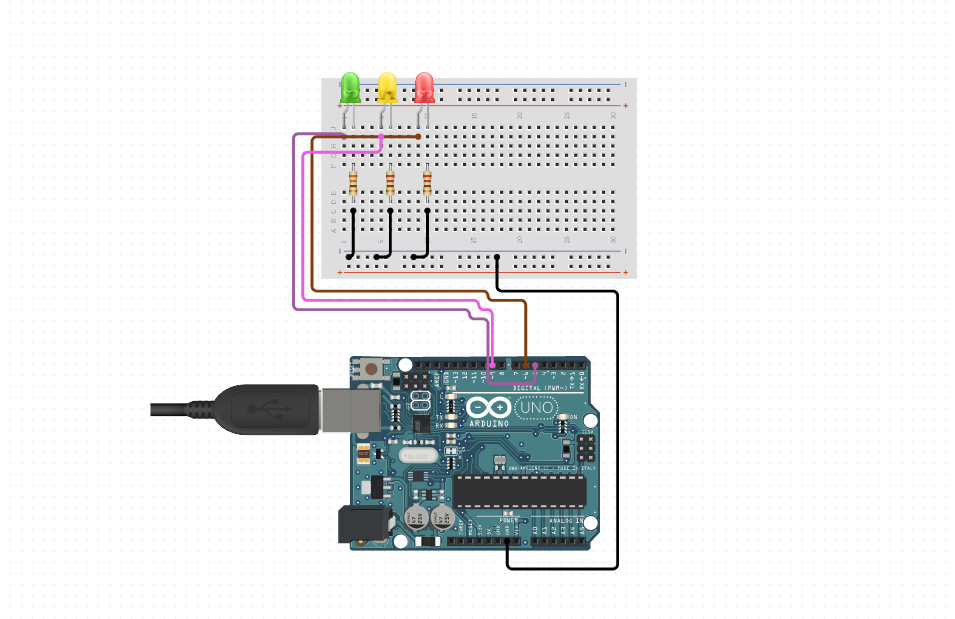

PROJECT #3 STORY: Arduino Traffic Light and python interface
For the third design prompt assignment, we were tasked to complete a “social-able” computer. This project
required the students to create a computer that would be able to communicate with other computers. I used
pyserial to interface my personal computer with my Arduino using python
scripts. The main goal of
this project to control multiple Arduino devices at the same time using a central computer.
This project was inspired by real-life traffic control systems that keep our roads and streets running
smoothly.
Intended Users
The intended users for this project are cities, in particular traffic controllers. Lights are controlled
by a central computer with one script. This is much more efficient than individually programmed lights as
you do not need to reprogram each light individually. Reprogramming multiple lights is instantaneous.
Since all lights are connected to the main computer, we can see which lights may be down or
malfunctioning. This saves cities time and money.
Coding the Arduino
This project requires knowledge of python (preferably the latest version 3.9) and
basic scripting. It uses pyserial package which is installable by pip3. I programmed
the Arduino to expect output from the serial monitor. This serial monitor output is the output
of the python script thanks to pyserial.
Firstly, I programmed 3 states in the Arduino , RED on, GREEN on, and
YELLOW on. The Arduino receives conditional codes (0, 1, 2) to turn on
the respective lights. See below for the Arduino code.
Arduino Code
int datafromUser=0;
int RED = 11;
int YELLOW = 12;
int GREEN = 13;
void setup() {
pinMode(RED , OUTPUT );
pinMode(YELLOW , OUTPUT);
pinMode(GREEN , OUTPUT);
Serial.begin(9600);
}
void loop() {
if(Serial.available() > 0)
{
datafromUser=Serial.read();
}
if(datafromUser == '2')
{
digitalWrite(RED , LOW );
digitalWrite(YELLOW , LOW);
digitalWrite(GREEN , HIGH);
}
else if(datafromUser == '1')
{
digitalWrite(RED , LOW );
digitalWrite(YELLOW , HIGH );
digitalWrite(GREEN , LOW );
}
else if(datafromUser == '0')
{
digitalWrite(RED , HIGH );
digitalWrite(YELLOW , LOW);
digitalWrite(GREEN ,LOW);
}
}
Secondly, I wrote out the python script. The script will first interface pyserial
and connect to our Arduino on its port. We have 3 integer variables that correspond to the RED, GREEN, and
YELLOW on-time values (in seconds). These values can be changed, the default is GREEN 5 seconds, RED 5
seconds, and YELLOW 1 second. The python script has a while condition that runs infinitely
(until termination of the script). We first send a conditional to turn on a light. Then we sleep for the
amount of time that we set with the respective lights. Then, the next conditional code will be sent, so on
and so forth. See below for the python script.
python Code
import serial, time
arduino=serial.Serial('COM4',9600)
time.sleep(2)
green=5;
yellow=1;
red=5;
print("Currently green: ", green, " red: ", red, " yellow: ", yellow);
while True:
arduino.write(b'2')
time.sleep(green)
arduino.write(b'1')
time.sleep(yellow)
arduino.write(b'0')
time.sleep(red)
Lastly, we wire up the Arduino. We require the following:
- Arduino Unit
- Breadboard w/ 5V/Ground Jumper cables
- 3x Jumper cables
- 3x LEDs (red, green, yellow)
- 3x 220Ω resistors
The schematics for the project can be found below.

Courtesy of circuit.io